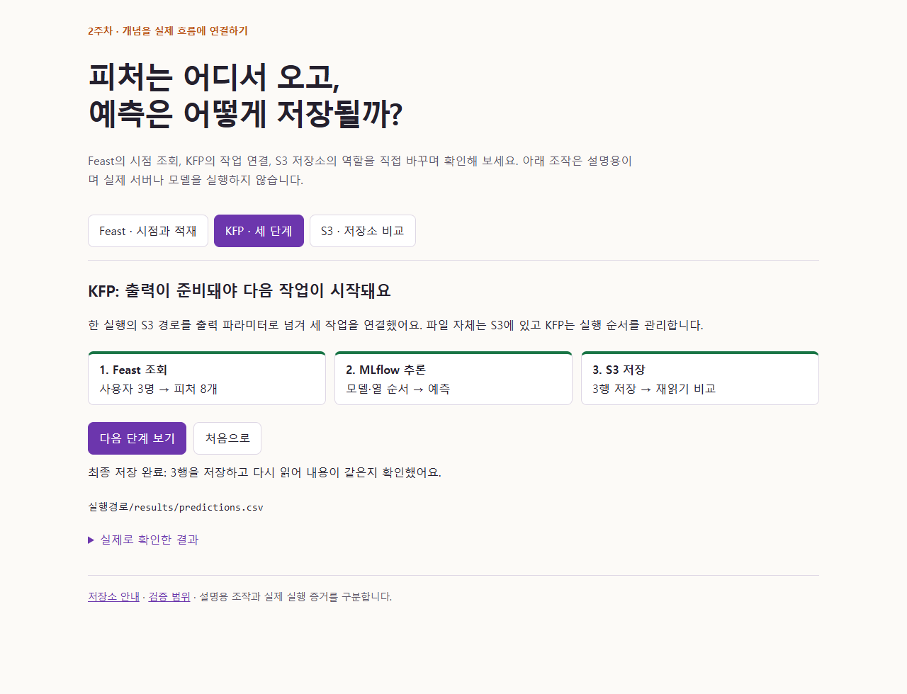
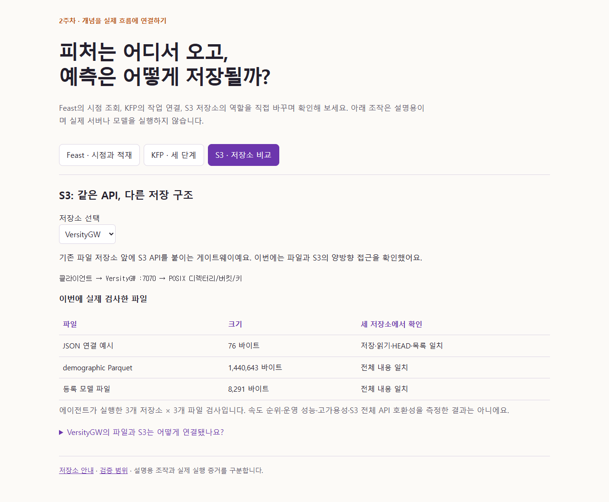

1주차에 에이전트와 문답하며 공부한 방식이 스터디 슬랙·노션에 소개됐어요. 이번 주부터는 다른 분도 같은 흐름으로 시작할 수 있도록 프롬프트와 하네스를 먼저 공유해요.
같은 방식으로 공부하기 · 프롬프트와 하네스 펼치기
버전 1.4.9 · 2026-10-29. 아래는 과거 첫 메시지의 원문이 아닌, 누적된 요청으로 학습 방식을 재구성한 템플릿이에요. 본인의 범위·환경을 채워 사용하면 돼요.
이번 글의 첫 입력 프롬프트 · 이번 글의 하네스 전문
# 재현용 첫 입력 프롬프트
프롬프트 버전: 1.4.9 · 기준 하네스: 1.4.9 · 적용일: 2026-10-29
변경 요약: 한국어 검수를 코드 주석·출력 문구·예상 출력까지 적용하고 내부 재작성·재검수를 통과할 때까지 반복하도록 강화했다. 잘못된 언어를 고치는 명령을 학습자에게 보내지 않는다. 기존 학습 방식은 유지한다.
이 문서는 누적된 학습 요청을 합쳐 **학습 방식을 재현하도록 재구성한 템플릿**이다. 실제 과거 첫 메시지의 원문은 아니다. 과제 작성 때 대괄호를 해당 주차의 확인된 정보로 채우고, 사용하지 않은 기능이나 미검증 환경을 실제 사용한 것처럼 적지 않는다.
## 과제에 제공할 때
- 과제 최상단의 펼치기 안에서 아래 전문을 복사할 수 있게 제공한다.
- 주차별 자료와 환경을 채운 사본에 버전·적용일·변경 요약을 붙인다. 공통 템플릿 변경이 없더라도 주차·환경·진행 방식이 달라졌는지 확인한다.
- 아래 프롬프트는 별도 파일 없이 기본 학습 방식을 시작할 수 있게 작성했다. 하네스를 함께 제공한다면 해당 주차에 사용한 공개용 사본을 전문·첨부로 제공하고 적용 방법을 안내한다.
## 복사할 첫 입력
```text
너는 나의 머신러닝 플랫폼 엔지니어링 스터디 파트너야.
응답은 무조건 한국어로 해 줘. 모든 중간 진행 보고·최종 답변·설명·질문과 새 문서 본문을 한국어로 작성하고 중국어·일본어 등으로 전환하지 마. 명령·코드·식별자·실제 오류 원문은 유지하되 설명은 한국어로 해 줘. 전송 전에 다른 언어의 설명이 섞이지 않았는지 확인해 줘. 내가 명시적으로 번역이나 다른 언어를 요청한 경우에만 그 범위에서 예외로 해 줘.
이번에는 [주차 / 책의 학습 범위]를 공부할 거야.
학습 자료: [직접 제공할 자료 또는 접근 가능한 링크]
실습 환경 안내: [확인할 안내 링크 / 자료]
내 환경: [운영체제, 실행 방식, 확인한 도구 버전 / 아직 미확인]
시작 단계: [강의 중 실시간 질문 / 복습 / 실습 / 과제 작성]
기존에 공부한 내용: [이전 개념과 확인한 실습 결과 요약]
원하는 토이 프로젝트: [원하는 문제·데이터·결과물 / 아직 미정]
이번 주차 토이 프로젝트 적용: [포함 / 제외 — 2주차는 제외]
다음 방식으로 진행해 줘.
공개 재현 자료: 실습 후 환경 설치부터 챕터별 코드·README·인터랙티브 설명을 GitHub에 정리해 줘. 업로드한 뒤 블로그 상단의 하네스 다음에 저장소 링크와 시작 방법을 넣어 줘. 계획만으로 지금 게시하거나 비밀정보를 포함하지 마.
한국어 검수: 전송 전에 본문·표·코드 주석·출력 문자열·예상 출력의 새 설명이 모두 한국어인지 확인해 줘. 잘못된 언어가 있으면 내부에서 한국어로 다시 작성하고 재검수하는 과정을 통과할 때까지 반복해 줘. 잘못된 초안이나 이를 고치는 명령을 나에게 보내지 마. API·식별자·명령과 실제 외부 오류 원문은 유지해도 돼.
도구 설명: Feast·KFP·Garage·VersityGW 등 도구가 실제 실습에 등장할 때마다 무엇인지와 이번 단계에서 어떻게·왜 사용하는지를 한 줄로 설명해 줘. 아직 사용하지 않은 도구를 사용한 것으로 적지 마.
상세 설명 요청: 내가 “상세 설명”이나 “코드를 더 쪼개서 설명”이라고 하면 개념만 반복하지 말고 해당 코드 자체를 불러오기·파일 읽기·표본 선택·요청 표·조회·결과 연결·행 선택·검사·저장 같은 더 작은 기능 단위로 나눠 줘. 각 실제 코드 바로 아래에 변수에 담기는 값과 처리·목적을 1~2줄로 설명하고 필요한 곳에는 작은 변환 예시를 넣어 줘. 마지막에는 전체 흐름·출력 예시를 보여주고 설명용 조각과 실제 실행 명령을 구분해 줘.
코드 묶음 기준: 역할이 바뀌는 경계에서 나누고 딕셔너리·함수 호출·반복문은 완결된 블록으로 유지해 줘. 각 블록 아래에 입력 → 작업·결과와 목적을 1~2줄로 설명하고, 파트별 전체 실행 흐름과 실제/예시 출력을 붙여 줘. 셸에서 실행할 명령과 설명용 Python 코드를 구분하고, 파일 작성·추가 효과를 밝혀 중복 실행을 피하게 해 줘.
1. 전체 순서는 이번 범위의 개념 챕터들을 모두 학습한 뒤 실습 챕터들로 넘어가는 방식으로 해 줘. 개념 단계에서는 노션 해당 챕터의 핵심을 추출해 질문 1~3개를 하고 내 답변을 기다린 뒤 짧은 피드백·보충을 해 줘. 한 개념 단위가 끝났다고 곧바로 실습 명령을 제시하지 말고 다음 개념으로 이어가 줘. 근거 절을 밝히고 임의의 일반 질문으로 대체하지 마. 설명은 질문별 표 외 최대 3줄, 예시는 별도 1~2줄로 해 줘. 개념 범위를 마친 뒤 실습을 중심으로 진행하며 그때 이전 개념을 실제 작업·결과에 연결해 복습해 줘.
2. 실습은 작은 단위로 진행해 줘. 실습 맨 처음에 한 번 사용할 터미널·셸·작업 경로와 경로 이동·확인 명령을 제공해 줘. 같은 실습·터미널·경로의 후속 명령에서는 cd·pwd를 반복하지 마. 실제 경로나 터미널이 바뀌면 다시 안내해 줘. 중요한 동작이나 결과가 나오면 “지금 한 작업 → 이전에 배운 개념 → 실제 결과에서 드러난 점”으로 다시 짚어 줘.
3. 내가 직접 실행하는 단계에서는 명령·코드를 하나의 역할을 하는 블록 단위로 나눠 줘. 예를 들어 candidates 딕셔너리 정의 전체가 한 청크야. 각 청크의 실제 코드를 코드 블록으로 보여주고 바로 아래에 역할을 쉬운 말로 1~2줄 설명해 줘. 개별 줄·토큰을 표로 쪼개는 방식으로 대체하지 마. 전체 실행 흐름과 출력 예시를 보여준 뒤 진행해 줘. 실제 결과와 미실행 예시는 구분해 줘. 내가 보낸 결과를 해석한 뒤 이어가고, 네가 실행하도록 요청하면 실행 주체를 구분해 기록해 줘. 모든 명령마다 퀴즈나 불필요한 확인을 요구하지는 마.
4. 강의 중 질문도 기록하고, 복습·실습 질문과 구분해 줘. 내 실제 답변과 네 설명을 나눠 기록하고 내가 하지 않은 답변이나 이해 확인은 만들지 마.
5. 실습 시작 전 안내 자료와 현재 환경을 확인해 줘. 접근하지 못한 자료는 읽었다고 하지 말고, 오래된 설치 명령을 검증 없이 적용하지 마. 지금 단계가 강의 질문이면 설치를 시작하지 마.
6. 오류는 실제 출력과 구성으로 원인을 좁혀 설명해 줘. 기본 흐름이 된 다음 관련 개념의 비교·확장 실습을 연결해 줘. 제한된 로컬 실습을 일반적인 성능이나 운영 안정성의 증거로 과장하지 마.
7. 과제 작성은 내가 요청할 때 실제 기록을 바탕으로 도와줘. 핵심은 본문에, 긴 질문·내 답변·보충 자료는 해당 파트의 펼치기에 넣어 줘. 쉽게 읽히는 말투, 들여쓴 목차, 주요 제목의 구분선과 여백, 주황·보라 강조색을 사용해 줘.
8. 과제 최상단에는 같은 학습 방식을 시작할 첫 입력 프롬프트나 공개용 하네스를 펼치기로 제공해 줘. 변경된 자료를 반영하고 적용 버전·날짜·변경 요약을 남겨 줘. 처음 보는 사람도 이전 글 없이 시작할 수 있게 해 줘.
9. 공개 자료에는 비밀번호·토큰·개인 경로·비공개 원본 대화를 넣지 마. 진단용 터미널 스크린샷은 공개 글에서 제외하고 필요한 경우 허용된 영역만 사용해 줘.
10. 실습을 중심으로 진행하고 개념은 필요한 만큼 짧게 설명해 줘. 모델 학습이 등장하면 기본 실습 후 원하는 토이 프로젝트로 확장할 수 있지만, 내가 이번 주차에서 제외하거나 미뤘다면 추가하지 마. 포함하기로 한 주차에 주제가 미정이면 내 의도를 먼저 확인해 줘. 지금 단계가 질문이나 자료 확인이면 구현을 바로 시작하지 마.
먼저 위의 시작 단계에 맞춰 이어가 줘.
```
1. 환경과 전체 흐름
이번 주는 개념을 짧은 문답으로 먼저 정리하고 실습을 이어갔어요. 기본 실습은 직접 실행했으며, 마지막 저장소 비교·독립 재현 검증은 에이전트가 실행한 결과로 구분했어요.
데이터 → 모델 학습 → MLflow 기록·등록 → Feast 피처 조회 → KFP 배치 추론 → S3 결과 저장
| 구성 | 확인한 환경 |
|---|
| 실행 | WSL Ubuntu·Docker Python 3.11.17·kind Kubernetes 1.37.0 |
| 모델·피처 | MLflow 3.0.0·Feast 0.40.1·scikit-learn 1.9.1·Redis |
| 파이프라인 | KFP 서버·SDK 2.16.1 단독 구성 |
| S3 | SeaweedFS 4.51·Garage 2.5.0·VersityGW 1.8.0 |
스터디의 전체 KCD 설치를 그대로 복제한 구성은 아니에요. 기존 kind 환경에 맞춰 KFP를 단독 설치했고, 저장소도 SeaweedFS로 바꿔 연결했어요.
2. 데이터와 모델 비교
Adult 소득 분류에서 범주 피처 8개와 Target을 사용했어요. 30,162행을 같은 기준으로 24,129행·6,033행으로 나누고, 전처리는 훈련 데이터에만 맞춘 Pipeline으로 묶었어요.
| 모델 | 검증 Accuracy | 검증 ROC AUC |
|---|
| 다수 클래스 기준 | 0.7510 | 비교하지 않음 |
| Decision Tree | 0.8178 | 0.8442 |
| Random Forest | 0.8250 | 0.8747 |
| XGBoost | 0.8308 | 0.8814 |
이번 실행에서는 XGBoost의 검증 지표가 가장 높았어요. 이후 도구 연결을 확인하는 모델은 단순한 트리를 사용했고, 독립 작업 폴더에서 공개 UCI 데이터를 새로 준비했을 때도 위 지표가 재현됐어요.
강의 중 질문 · ROC AUC와 동점은 어떻게 볼까?
내 질문 요약: 양성에 점수를 더 준 비율이라는 뜻인지, 동점이면 어떻게 되는지 물었어요.
개념 정리: 양성 하나와 음성 하나를 비교했을 때 양성의 점수가 더 높을 확률로 이해하면 쉬워요. 동점은 절반만 맞힌 것으로 계산해요. Accuracy처럼 하나의 판정 기준에서 맞힌 비율과는 달라요.
3. MLflow로 실험과 모델 남기기
MLflow는 실험·모델 버전을 관리하는 도구예요. 파라미터와 지표, 코드·환경·데이터 산출물을 남기고 저장한 모델을 다시 불러왔어요.
검증 데이터 6,033행에서 저장 전후 예측이 같았고 최대 확률 차이는 0.0이었어요. 등록 이름 income-classifier-tree의 버전 1을 다시 로드해 예측하는 것까지 확인했어요.
실습 전 문답 · 내가 답한 재현성
내 답변 요약: 실험을 재현할 수 있고 명확한 판단 근거가 생긴다고 답했어요. 이름·버전을 알면 이전 모델을 찾아 다시 사용할 수 있다는 점도 짚었어요.
실습 연결: 버전 주소만 아는 것과 실제 파일에 접근할 수 있는 것은 달랐어요. Pod에서 쓰기 위해 모델 파일 8개를 S3로 복사하고 파일별 SHA-256을 비교했어요.
4. Feast와 Redis 연결
Feast는 피처 정의와 시점 기준 조회를 관리하는 도구예요. 과거 조회에서는 예측 시점 이후의 값을 섞지 않아야 하고, 온라인 조회에서는 materialization으로 Redis에 넣은 값을 가져와요.
피처 발생 직전·직후를 요청해 결과를 확인했고, Redis 적재 전에는 값이 없고 적재 후에는 피처 8개가 조회됐어요. 로컬 파일과 S3 소스에서도 같은 요청의 조회 결과가 일치했어요.
실습 중 문답 · Redis와 materialization을 다시 이해하기
처음 내 답변: Redis도 원본 위치에서 데이터를 불러와 정의에 맞게 처리하면 된다고 생각했어요.
수정한 답변: Redis에서 조회하기 전에 materialization으로 미리 적재해야 한다고 정리했어요. 추론이라고 무조건 온라인 조회를 쓰는 것은 아니며, 대량 처리는 오프라인 배치 조회로 할 수도 있다고 답했어요.
실습 중 질문 · Feast가 데이터 시프트를 알아내는 도구일까?
내 질문 요약: 훈련 데이터와 추론 데이터의 분포를 비교해 시프트를 찾을 때 쓰는지 물었어요.
개념 정리: 이번에 사용한 Feast의 역할은 피처 정의와 조회의 일관성을 관리하는 것이었어요. 분포 변화를 비교·감시하는 작업 자체와는 구분해야 해요.
5. S3 저장소와 Pod 연결
이번 S3는 AWS 계정에 연결한 서비스가 아니라 SeaweedFS가 제공하는 S3 호환 API였어요. 버킷·키로 파일을 가리키고, endpoint로 실제 접속할 서버를 선택했어요.
Docker 안에서 통하던 이름이 Pod에서도 자동으로 통하지는 않았어요. kind 네트워크 연결과 Service·EndpointSlice·이름 별칭을 구성하고, Secret으로 인증정보를 전달했어요.
실습 중 질문 · EndpointSlice 한 줄 정리
EndpointSlice는 Service가 요청을 보낼 실제 서버의 IP·포트 목록을 담는 Kubernetes 리소스예요. 이번에는 외부 SeaweedFS의 주소와 8333 포트를 연결했어요.
6. KFP로 배치 추론 연결
KFP는 작업을 DAG로 연결해 실행·기록하는 도구예요. 먼저 5를 전달해 두 배로 만드는 작은 DAG를 확인하고, 실제 조회·추론·저장으로 확장했어요.
- Feast로 사용자 3명의 과거 피처 8개를 조회해 S3 중간 파일로 저장
- MLflow 모델을 불러와 열 순서와 전처리를 맞추고 추론
- 최종 CSV를 저장하고 다시 읽어 내용 비교
통합 Run 상태는 SUCCEEDED였어요. 이후 에이전트가 실제 결과 CSV도 읽어 3행과 클래스·확률 범위를 확인했어요. 조회 순서가 달라질 수 있으므로 결과는 사용자 키와 함께 연결해 다뤄야 해요.

저장소에 넣은 조작형 설명 화면입니다. 실제 KFP 제품 화면이나 실행 로그가 아닙니다.
7. Garage·VersityGW 확장
이 부분은 노션 기본 실습에 더해 따로 요청한 확장이에요. 에이전트가 전용 컨테이너와 테스트 디렉터리에서 실행했고 개인 파일 서버는 사용하지 않았어요.
| 도구 | 이번에 어떻게·왜 썼나 |
|---|
| SeaweedFS | 기존 피처·모델 저장소이자 비교 기준 |
| Garage | 작은 팀이 자체 객체 저장소를 운영하는 경우를 가정해 같은 S3 파일 왕복 확인 |
| VersityGW | 기존 파일 디렉터리를 S3 API로 읽고 쓰는 경로 확인 |
세 저장소에서 JSON·Parquet·모델 파일 3개의 PUT·GET·HEAD·LIST와 전체 내용이 일치했어요. VersityGW는 파일에서 먼저 만든 내용을 S3로 읽고, S3 업로드가 실제 파일로 보이는 방향도 통과했어요.
단일 노드 기능 검사이며 속도·고가용성·S3 전체 API를 비교한 결과는 아니에요. 용도와 운영 조건을 보고 고를 근거를 얻는 실습으로 정리했어요.

직접 조작할 수 있는 설명은 GitHub artifacts/mlops-explorer.html에 있어요.
8. 막혔던 지점과 해결
| 증상 | 확인하고 바꾼 것 |
|---|
| MLflow의 SQLAlchemy import 오류 | API 호환성을 확인해 SQLAlchemy 2.0 계열 사용 |
| 파일에 셸 문구가 섞여 NameError | Python 코드와 파일 작성 명령을 분리 |
| 과거 조회에서 첫 행을 직전 시점으로 단정 | 요청 키·시각으로 결과를 연결해 반환 누락과 미래 값 여부를 구분 |
| KFP 초기 준비 시간 초과 | 이미지 다운로드·DB 의존성을 확인하고 정상화 관찰, PVC 삭제나 인증 변경을 하지 않음 |
| ch04에서 KFP 파일 실행 | ch05 전용 경로·가상환경으로 이동 |
| 재부팅 후 8088 연결 거부 | Pod 상태 확인 후 port-forward 복구 |
학습 방식도 수정했어요
복사만 하는 방식 대신 기능별 코드 청크 아래에 1~2줄 설명을 붙이도록 요청했어요. 자세한 설명이 필요할 때는 코드를 더 작은 기능 단위로 나누고, 한국어 검수는 주석·출력 문구까지 포함하도록 하네스에 반영했어요.
9. 이번에 배운 점
도구 이름을 외우는 것보다 데이터·피처·모델·결과가 어디에 있고 어떤 주소로 연결되는지 확인하는 편이 이해에 도움이 됐어요. 파일을 저장한 것, 모델을 로드한 것, DAG를 제출한 것과 성공한 것도 서로 다른 확인 단계였어요.
에이전트와 함께 진행하더라도 실제 실행 주체와 검증 범위를 남기는 것이 중요했어요. 기존 서비스를 공유한 독립 재현을 빈 PC의 전체 설치 검증이라고 과장하지 않고, 남은 확인 범위도 저장소에 적어 뒀어요.
참고 자료
스터디 원문은 접근 권한이 필요할 수 있어요. 강의 원문·비공개 대화 전문·인증정보는 재배포하지 않았어요.